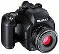

器材库 > 120中幅相机 > 645N II

规格总览
产品类型
TTL镜后测光、自动曝光、自动对焦6x4.5片幅单镜反光相机
发布日期
2001-10-19
厂家推荐价格
310,000.00 （日元）
标称画幅
6 × 4.5cm
实际画幅
56 × 41.5mm
停产
是
取景规格
取景范围
[水平]92% × [垂直]93%
取景放大倍率
0.76倍
对焦屏
可更换式原像明亮磨砂对焦屏(重点磨砂式为标准设备)
反光镜锁定
有
取景器信息
对焦指示，快门速度，光圈指示，闪灯状况，条码圆表，记忆锁，曝光补偿指示，超出曝光范围警告，手动曝光时曝光过度或不足指示。
景深预视
有
镜头和对焦
镜头卡口
P645A
对焦
TTL相位检测式自动对焦系统（SAFOX IV）；有对焦锁及焦点预测式自动对焦；有效范围EV-1 ~ EV18（ISO 100）；AF模式：AF-S和AF-C。
曝光控制
测光系统
TTL镜后测光全开光圈多区域测光。 测光模式： (1)双组六分区测光 (2)中央重点加权平均测光 (3)点测光。
测光范围
2EV~21EV
曝光补偿
±3EV以1/3 或 1/2EV级调整
多重曝光
有
自动包围曝光
±1/3EV、±2/3EV、±1EV 或 ±1/2EV、±1EV、±1.5EV
自动曝光锁
有
ISO感光度
6-6400
快门
电子控制纵走式焦平面快门。关闭电源会锁上快门。
快门速度
自动：30 - 1/1000秒；手动：4 - 1/1000秒；B门长时间曝光；镜间快门：1/8秒
闪光同步速度
1/60
闪灯控制
经由热靴配合Pentax专用闪光灯时刻进行TTL自动闪光
过片系统
胶卷安装
快门按钮启动自动卷片至第一格
过片
内置马达驱动自动卷片。卷片模式：单格卷片模式、连续卷片模式（2fps）。卷末自动过片（可中途退卷）
其它规格
机身LCD显示
ISO胶卷速度，曝光格数，卷片状况，电池电量，拍摄资料印列。
打印信息
七段点阵式曝光资料打印于照片影像以外范围：胶卷格数，曝光模式，快门速度（长时间曝光模式的时间），光圈，曝光补偿值，测光模式，镜头焦距（仅限Pentax FA自动对焦镜头，双焦镜则可显示约数）。可取消打印功能。
接口
热靴, 快门线插孔, 闪光同步插孔
电池
6枚AA型1.5V电池（碱性电池或锂电池），可拍约130卷120胶卷或100卷220胶卷。
机身尺寸
150 × 111 × 117mm
机身重量
1280g
fsylco2010-05-28 16:44
最后手动2010-04-13 19:444.17 分
操作性 4.50功能性 4.50美观性 4.00趣味性 4.00耐用性 3.50性价比 4.50
00oooo002009-05-26 22:454.58 分
操作性 4.50功能性 4.50美观性 4.50趣味性 4.50耐用性 4.50性价比 5.00
F1.02009-02-09 00:004.5 分
操作性 5.00功能性 5.00美观性 4.50趣味性 3.00耐用性 4.50性价比 5.00
老派2008-09-23 09:364.67 分
操作性 5.00功能性 4.50美观性 5.00趣味性 4.50耐用性 4.50性价比 4.50
长乐2008-08-24 09:414.58 分
操作性 5.00功能性 5.00美观性 4.00趣味性 4.50耐用性 4.50性价比 4.50
xhndhp2007-09-13 11:164.75 分
操作性 5.00功能性 5.00美观性 4.50趣味性 4.50耐用性 5.00性价比 4.50
fsylco2006-09-06 11:404.42 分
操作性 4.50功能性 4.50美观性 4.50趣味性 4.50耐用性 4.50性价比 4.00
快门画笔鼠标2006-03-28 14:465 分
操作性 5.00功能性 5.00美观性 5.00趣味性 5.00耐用性 5.00性价比 5.00
国仁2006-01-25 12:174.42 分
操作性 5.00功能性 5.00美观性 3.50趣味性 4.00耐用性 4.50性价比 4.50
快门画笔鼠标2005-12-09 16:40
子兮微澜2005-10-20 09:513.92 分
操作性 4.50功能性 4.00美观性 4.00趣味性 2.50耐用性 4.00性价比 4.50
qf1172005-10-03 11:194.92 分
操作性 5.00功能性 5.00美观性 4.50趣味性 5.00耐用性 5.00性价比 5.00
小怒2005-04-13 19:143.83 分
操作性 4.50功能性 2.50美观性 4.50趣味性 4.00耐用性 4.50性价比 3.00
ET20002005-04-08 15:564.75 分
操作性 5.00功能性 5.00美观性 4.50趣味性 4.50耐用性 4.50性价比 5.00
工匠2005-03-11 21:354.5 分
操作性 4.50功能性 4.50美观性 5.00趣味性 4.50耐用性 3.50性价比 5.00
老点2004-11-13 18:064.58 分
操作性 5.00功能性 5.00美观性 4.50趣味性 4.50耐用性 4.50性价比 4.00
bootek2004-11-05 02:454.83 分
操作性 5.00功能性 4.50美观性 5.00趣味性 5.00耐用性 5.00性价比 4.50
恒沙2004-09-24 17:474.67 分
操作性 4.50功能性 4.50美观性 5.00趣味性 4.50耐用性 4.50性价比 5.00
thy9600812004-09-11 16:325 分
操作性 5.00功能性 5.00美观性 5.00趣味性 5.00耐用性 5.00性价比 5.00
捕风弄影2004-03-30 01:204.92 分
操作性 5.00功能性 4.50美观性 5.00趣味性 5.00耐用性 5.00性价比 5.00
年糕2004-02-24 00:084.58 分
操作性 5.00功能性 4.00美观性 4.50趣味性 4.00耐用性 5.00性价比 5.00
xujiayan8212003-01-16 12:154.58 分
操作性 5.00功能性 4.50美观性 5.00趣味性 4.50耐用性 4.00性价比 4.50
上海120鹅友2002-11-15 19:574.75 分
操作性 5.00功能性 4.50美观性 5.00趣味性 4.50耐用性 4.50性价比 5.00
天际风2002-11-14 17:523.83 分
操作性 4.00功能性 4.00美观性 5.00趣味性 4.50耐用性 1.50性价比 4.00
Siokin2002-08-22 08:334.08 分
操作性 4.50功能性 4.00美观性 4.50趣味性 4.50耐用性 4.00性价比 3.00
roc_rock2002-04-22 16:364.83 分
操作性 5.00功能性 4.50美观性 5.00趣味性 4.50耐用性 5.00性价比 5.00
Return2002-04-10 20:384.83 分
操作性 4.50功能性 4.50美观性 5.00趣味性 5.00耐用性 5.00性价比 5.00
mygun2002-04-10 12:004.5 分
操作性 5.00功能性 5.00美观性 5.00趣味性 3.00耐用性 4.00性价比 5.00
产品图 / 样片
宾得 645N II
评测 / 相关文章
- 详细内容 （存档）